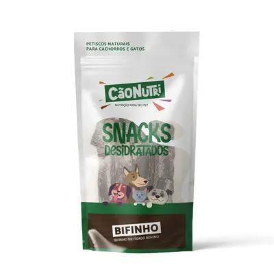

Petiscos Naturais
Detalhes do Produto
- Marca
- NaturalTreat
- Peso
- 200g
- Indicação
- Cães de todos os portes
- Sabores
- Frango, Carne, Salmão
- Características
-
- 100% natural
- Sem conservantes artificiais
- Sem corantes
- Rico em proteínas
- Baixo teor de gordura
- Ideal para treinamento
- Validade
- 6 meses
- Preço
- R$ 24,90
Descrição
Petiscos naturais e saudáveis, ideais para recompensar e treinar seu cão. Fabricados com ingredientes selecionados, sem conservantes ou corantes artificiais. Alto valor nutricional e sabor irresistível que seu pet vai adorar.